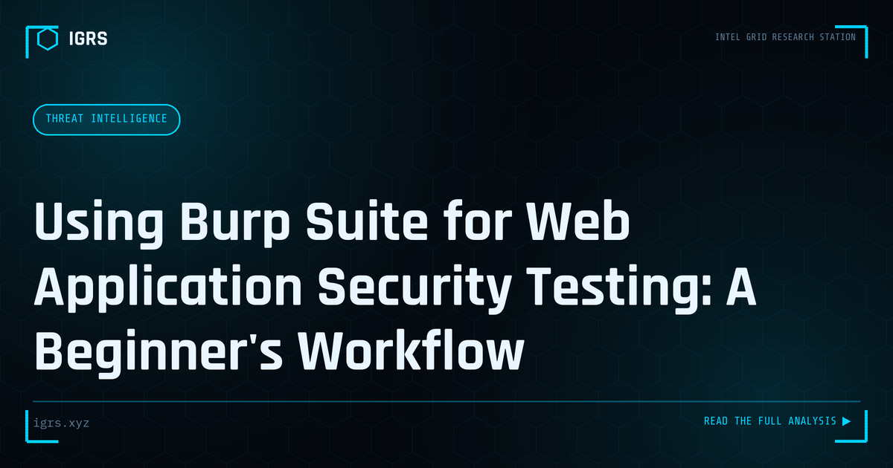

Using Burp Suite for Web Application Security Testing: A Beginner's Workflow
| File No. | IGRS-040/2026 |
| Subject | Practical introduction to Burp Suite Community Edition for authorized web application testing |
| Category | Threat Intelligence |
| Author | Manuj Kumar Pandey |
| Published | 2026-04-06 |
| Reading time | 12 minutes |
Burp Suite is the industry-standard tool for web application security testing. The essential workflow for beginners doing authorized assessments.
Burp Suite: The Web Security Testing Standard
Burp Suite is the industry-standard platform for web application security testing. Used by penetration testers, bug bounty hunters, and security researchers worldwide, it intercepts and manipulates web traffic, scans for vulnerabilities, and provides a comprehensive toolkit for assessing web application security. This guide introduces Burp Suite's capabilities and how it is used in authorised security testing.
What Burp Suite Does
At its core, Burp Suite acts as an intercepting proxy, sitting between the browser and the web application. This position lets it capture, inspect, and modify every request and response. From this foundation, Burp provides tools for scanning, fuzzing, replaying requests, and analysing application behaviour — making it a complete web security testing environment.
Community vs Professional
| Feature | Community | Professional |
|---|---|---|
| Intercepting proxy | Yes | Yes |
| Automated scanner | No | Yes |
| Intruder (full speed) | Throttled | Yes |
| Extensions (BApp) | Limited | Full |
| Reporting | No | Yes |
The Community edition is free and excellent for learning and manual testing, while Professional adds the automated scanner and advanced features essential for professional engagements.
The Core Tools
Burp Suite comprises several integrated tools:
- Proxy — intercept and modify traffic
- Repeater — manually modify and resend requests
- Intruder — automated customised attacks (fuzzing, brute force)
- Scanner — automated vulnerability detection (Pro)
- Decoder — encode/decode data
- Comparer — diff requests and responses
Setting Up Burp Suite
Using Burp requires configuring the browser to route traffic through Burp's proxy (default 127.0.0.1:8080) and installing Burp's CA certificate to intercept HTTPS. Once configured, all browser traffic flows through Burp, where it can be inspected and manipulated. Proper setup, including scoping to only the target in authorised testing, is the foundation of effective and responsible use.
Using Repeater for Manual Testing
Repeater is among the most-used tools, allowing testers to take a request, modify it, and resend it repeatedly to observe how the application responds. This is essential for manually probing for vulnerabilities — testing parameter manipulation, authorisation flaws, injection points, and business logic issues. The iterative modify-and-observe cycle in Repeater is central to thorough manual testing.
Intruder for Automated Attacks
Intruder automates customised attacks by inserting payloads into defined positions in a request. It enables fuzzing for vulnerabilities, brute-forcing credentials, enumerating values, and testing for injection across many inputs. With configurable payload sets and attack types, Intruder scales manual testing techniques across large numbers of requests — invaluable for thorough assessment.
The Scanner (Professional)
Burp Suite Professional's scanner automatically crawls applications and tests for a wide range of vulnerabilities — injection flaws, XSS, authentication issues, and more. While automated scanning never replaces skilled manual testing, it efficiently identifies common vulnerabilities and provides a baseline, freeing the tester to focus expertise on complex logic flaws that automation misses.
Legal and Authorisation Requirements
Critically, Burp Suite must only be used against systems you own or have explicit written authorisation to test. Using it against systems without permission constitutes unauthorised access under Sections 43 and 66 of the IT Act in India, carrying serious legal consequences. Professional testing always operates under a clear scope and authorisation. Responsible use within legal boundaries is non-negotiable.
Extensions and Customisation
Burp's BApp Store offers extensions that expand its capabilities — additional scanners, specialised tools, and integrations. Popular extensions enhance everything from authentication testing to specific vulnerability classes. For advanced users, Burp's extensibility allows tailoring the platform to specific testing needs, making it adaptable to virtually any web security assessment.
Building Web Security Testing Skills
Mastering Burp Suite is a cornerstone of web application security skill. Learning comes through hands-on practice on authorised targets — deliberately vulnerable applications like those in security training labs provide safe practice environments. Combined with understanding web vulnerabilities (the OWASP Top 10) and the legal framework for authorised testing, Burp Suite proficiency enables effective security assessment. For Indian security professionals, it is among the most valuable practical skills, underpinning the web application testing that protects organisations from the vulnerabilities attackers seek to exploit.